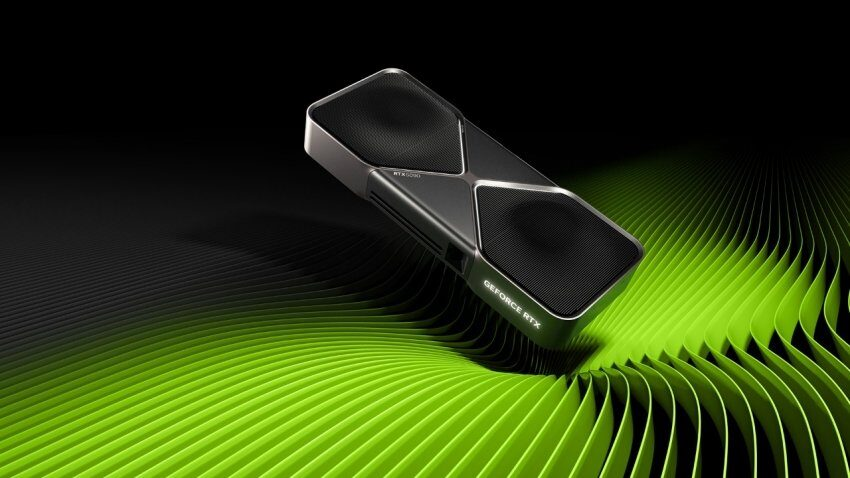
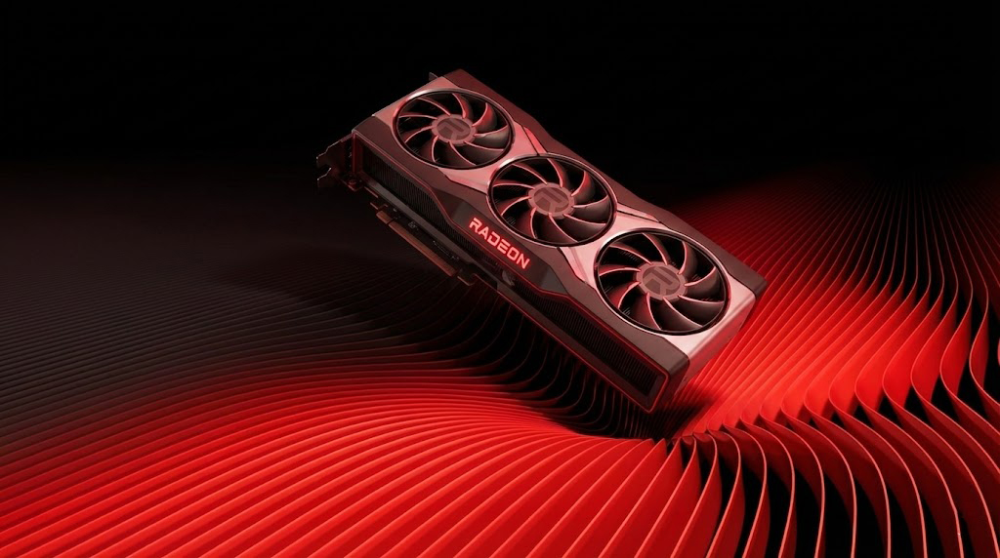
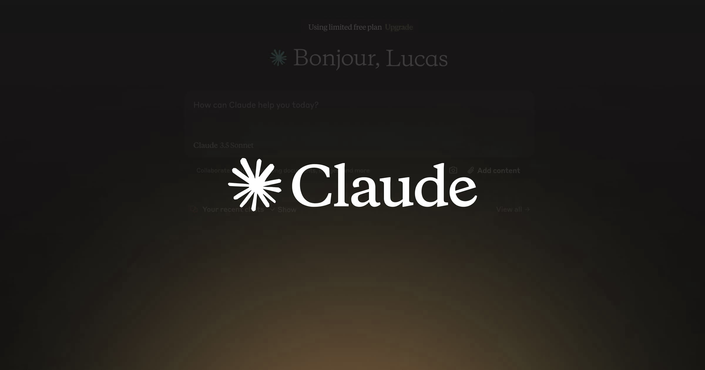
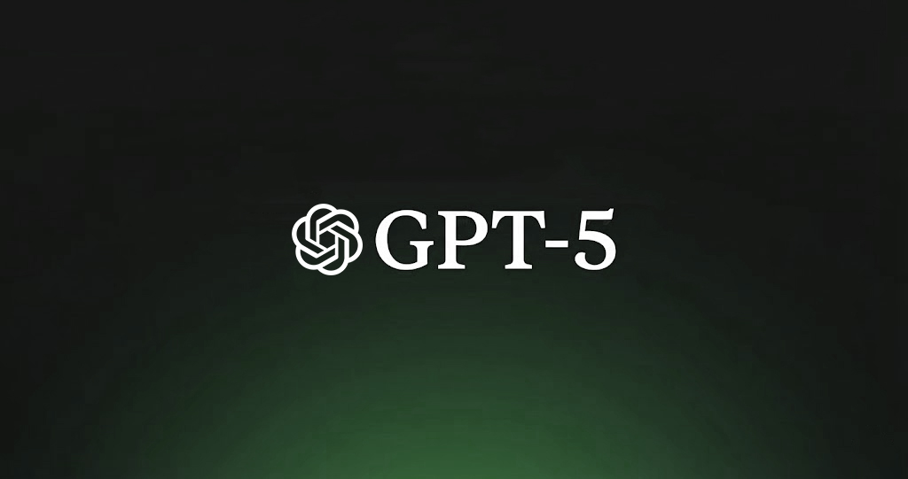

Cartes Graphiques
Hardware & PerformanceContexte
Je surveille régulièrement les sorties GPU de Nvidia et AMD pour analyser les performances, l'efficience énergétique, le ray tracing, les technologies d'upscaling (DLSS/FSR) et le support logiciel.
Palit GeForce RTX 5060 Ti 16 Go
Points forts
- DLSS 4 et excellent ray tracing
- Encodeurs NVENC récents
- Efficience énergétique solide
- Bon support création/streaming
Limitations
- Prix généralement plus élevé
Analyse comparative
La RTX 5060 Ti offre environ 10% de performances supplémentaires avec une consommation légèrement inférieure, mais génère plus de chaleur. La RX 9060 XT se démarque par ses températures plus basses et son excellent rapport qualité-prix. Le choix dépendra principalement de l'écosystème logiciel privilégié (DLSS vs FSR) et du budget disponible.
Données issues de TechPowerUp

Architecture NVIDIA RTX

Architecture AMD RDNA 4
Intelligence Artificielle
Modèles ConversationnelsContexte
Je suis l'évolution des modèles d'IA conversationnels en analysant la qualité des réponses, les capacités de raisonnement, la vision multimodale et les intégrations possibles pour comparer Claude et GPT-4 selon différents usages.
Claude 4.5 Sonnet
Caractéristiques
- Raisonnement "Agentic" autonome
- Utilisation d'ordinateur (Computer Use)
- Sécurité ASL-3 certifiée
- Maintenance de code complexe
Idéal pour
- Développement logiciel (DevOps)
- Tâches autonomes longues
- Analyse financière
GPT-5 (v5.2)
Caractéristiques
- Raisonnement instantané
- Planification multimodale
- Infrastructure massivement scalable
- Agents autonomes profonds
Idéal pour
- Recherche scientifique (Ph.D level)
- Résolution mathématique pure
- Systèmes critiques
Analyse comparative (2025)
Le paysage a évolué : GPT-5.2 atteint la perfection théorique en mathématiques (100% sur AIME) et domine sur la fenêtre de contexte (400K), le rendant imbattable pour la recherche scientifique lourde. Cependant, Claude 4.5 Sonnet reste la référence pour les développeurs grâce à ses capacités de "Computer Use" (contrôle de l'interface) et une architecture plus "fluide" pour le codage au quotidien, malgré des scores bruts légèrement inférieurs.

Claude AI - Raisonnement

GPT-5 - Créativité & Multimodal
Méthodologie de Veille
Sources
Hardware
TechPowerUp, VideoCardz, Tom's Hardware, Chaînes Tech (Gamers Nexus, Hardware Unboxed, Ancient Gameplays).
Intelligence Artificielle
Documentations OpenAI, Anthropic et LMARENA
Fréquence
Routine Hebdo
Consultation des flux RSS et newsletters techniques chaque lundi matin.
Synthèse Mensuelle
Rédaction d'un résumé des tendances majeures et mise à jour du portfolio.
Outils
Benchmarking
3DMark, Cinebench (GPU) et LMSYS Arena.
Organisation
Feedly, Notion et GitHub.